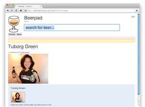

Hackathon creation: Beerpad
Vote on HN TweetTo spice things up from Outspokes and consulting, Arthur, Jeff and I held our first informal hackathon at Mo Joe Cafe on a sunny Saturday morning. The three of us had no real goal other than to get our geek on in good company. I had a great time brainstorming and creating my deliciously refreshing beer review site named Beerpad. Follow the jump for details on the project.
 My idea for Beerpad was straightforward enough; I wanted an app for writing beer reviews for my own reference and for sharing and exploring new beers with friends. Up until two or three months ago, I hadn't kept track of which beers I've tried. When I started taking notes, they outgrew index cards and my google doc pretty quickly. Other rating sites like BeerAdvocate and RateBeer have great information but have become noisy and cluttered over time. I thought I could do better than what the competition offered. The project also gives me a perfect excuse to try out new development techniques I've been reading about.
This being a hackathon, I scoped my design to the most interesting features in order to avoid slogging through uninteresting boring tasks I already knew how to implement. User registration? Nah. Linux setup? Recently did a bunch of that for Outspokes. Email deliverability? Later. The list of things I did not feel like working kept growing and growing. I was starting to worry that I'd have no project to work on, but the list finally whittled down to the core features:
- write beer reviews
- add photos
- search for beers
There are many fun ideas that friends have suggested like beer quests/feats, social networking, and mobile tools. I wanted to make this a realistic hackathon and complete something substantial and useful, so I'm keeping these fantastic ideas out of the first release for the sake of time. Many thanks to Dennis, Graham, both Wendys, Lilly, Andrew, and Sam for helping me seed initial beer names. I owe y'all a brewsky the next time I concoct a batch.
Summary of topics
These links will fill out as I write about them
- Hosting with Heroku
- Authentication with Authlogic
- Don't acts as no stinking state machine
- Sexy uploaders with SWFUpload, Paperclip, and S3
- Why acceptance testing? A lazy programmer's story of frustration with Cucumber and Watir
- Design for optimization: When it's not premature optimization
I had a lot of fun researching new techniques for writing this application. For hosting, I tried out Heroku and fell in love with their git workflow. For authentication, I took a step away from the well known restful_authentication plugin to look at clearance and authlogic. I found a great API with Authlogic and preferred it over its alternatives. I decided to allow drafts on beer reviews, so I reached for AASM (acts_as_state_machine), but I also looked at some alternatives. Unlike the happy endings of Heroku and authlogic, my adventure with state machines was a complete pain. For photo uploads, I wanted a sexy multifile uploader like flickr or gmail. This led me down a confusing maze of flash uploaders, flash bugs, and hard to configure Rails plugins and libraries. Concurrent with all this research and development. I looked for better ways to do integration and acceptance testing and also to design with performance in mind.
Whew. That was a lot to summarize and blurt out all at once. I think I'm going to find myself a cold refreshing beer to try. You should join me. -Jerry